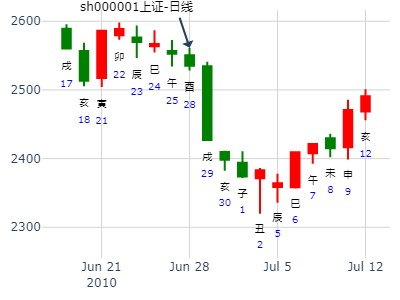

弘业期货123月。复之损。金玉堂。.md
时间: 2023-01-17 12时28分
干支: 壬寅年癸丑月乙亥日 (旬空: 申酉 )
地雷复 山泽损
六神 伏神 本 卦 变 卦
玄武 ▅▅ ▅▅ 子孙酉金 Ｘ→ ▅▅▅▅▅ 官鬼寅木 应
白虎 ▅▅ ▅▅ 妻财亥水 ▅▅ ▅▅ 妻财子水
腾蛇 ▅▅ ▅▅ 兄弟丑土 应 ▅▅ ▅▅ 兄弟戌土
勾陈 ▅▅ ▅▅ 兄弟辰土 ▅▅ ▅▅ 兄弟丑土 世
朱雀 父母巳火▅▅ ▅▅ 官鬼寅木 Ｘ→ ▅▅▅▅▅ 官鬼卯木
青龙 ▅▅▅▅▅ 妻财子水 世 ▅▅▅▅▅ 父母巳火
此例官鬼为忌。
占事：一职业投资者摇卦测沪市大盘趋势 起卦方式：手工指定 www.iqing.net 线上排盘系统
公历时间：2007年2月13日18时0分 星期二
干支：丁亥年 壬寅月 戊寅日 辛酉时 (旬空：申酉)
神煞：驿马—申 桃花—卯 日禄—巳 贵人—丑，未
坤宫：地雷复（六合） 艮宫：山泽损
六神 伏 神 【本 卦】 【变 卦】
朱雀 ▅▅ ▅▅ 子孙癸酉金 ×→ ▅▅▅▅▅ 官鬼丙寅木 应
青龙 ▅▅ ▅▅ 妻财癸亥水 ▅▅ ▅▅ 妻财丙子水
玄武 ▅▅ ▅▅ 兄弟癸丑土 应 ▅▅ ▅▅ 兄弟丙戌土
白虎 ▅▅ ▅▅ 兄弟庚辰土 ▅▅ ▅▅ 兄弟丁丑土 世
螣蛇 父母乙巳火 ▅▅ ▅▅ 官鬼庚寅木 ×→ ▅▅▅▅▅ 官鬼丁卯木
勾陈 ▅▅▅▅▅ 妻财庚子水 世 ▅▅▅▅▅ 父母丁巳火
1、主力意图维持高位，但看空者众多。（世临财得太岁相助、应临兄弟、土爻四重）2、此象似是官方有重大举措使得财星被重泄，行情有快速下跌之虑（子临空化官，官临日月处震宫动化进）。3、反弹即将结束，进入又一轮下跌。（主卦一阳来复为反弹，化损为下跌）综合看：短线明日（2月14日）即有较大跌幅，15日跌势减缓。 中线卯月下跌明显。此轮下跌至4月方可稳定。
王注：原贴判断完全不符客观走势。此例官鬼却为喜。寅卯月都是涨。
测002240盛新锂能在2022年5月份走势
公历起卦时间：2022年4月27日15时2分 (手工指定)
干支：壬寅年 甲辰月 庚戌日 甲申时 （日空：寅卯）
神煞：驿马－申 桃花－卯 日禄－申 贵人－丑，未
坤宫：地雷复 (六合) 艮宫：山泽损
六神 伏神 本 卦 变 卦
螣蛇 子孙癸酉金 ▅▅ ▅▅ ╳→ 官鬼丙寅木 ▅▅▅▅▅ 应
勾陈 妻财癸亥水 ▅▅ ▅▅ 妻财丙子水 ▅▅ ▅▅
朱雀 兄弟癸丑土 ▅▅ ▅▅ 应 兄弟丙戌土 ▅▅ ▅▅
青龙 兄弟庚辰土 ▅▅ ▅▅ 兄弟丁丑土 ▅▅ ▅▅ 世
玄武 父母乙巳火 官鬼庚寅木 ▅▅ ▅▅ ╳→ 官鬼丁卯木 ▅▅▅▅▅
白虎 妻财庚子水 ▅▅▅▅▅ 世 父母丁巳火 ▅▅▅▅▅
注：此例：官鬼为喜，兄弟太旺，官鬼来制兄弟。
姓名：yzh009 出生年:1981 性别：男 占事：下周大盘走势？
起卦方式：手工指定 易经股市论坛
公历时间：2010年6月27日9时32分
干 支：庚寅年 壬午月 戊申日 丁巳时
旬 空：午未 申酉 (寅卯) 子丑
坤宫：地雷复（六合） 艮宫：山泽损
朱雀 ▄▄ ▄▄ 子孙癸酉金 X-> ▄▄▄▄▄ 官鬼丙寅木 应
青龙 ▄▄ ▄▄ 妻财癸亥水 ▄▄ ▄▄ 妻财丙子水
玄武 ▄▄ ▄▄ 兄弟癸丑土 应 ▄▄ ▄▄ 兄弟丙戌土
白虎 ▄▄ ▄▄ 兄弟庚辰土 ▄▄ ▄▄ 兄弟丁丑土 世
螣蛇 父母乙巳火 ▄▄ ▄▄ 官鬼庚寅木 X-> ▄▄▄▄▄ 官鬼丁卯木
勾陈 ▄▄▄▄▄ 妻财庚子水 世 ▄▄▄▄▄ 父母丁巳火
大跌。寅木冲实还是冲飞？
世爻月破。

占事：长江传媒最近二周走势？
公历起卦时间：2015年11月17日20时4分 (阿晖在线摇卦)
干支：乙未年 丁亥月 丁酉日 庚戌时 （日空：辰巳）
坤宫：地雷复 (六合) 艮宫：山泽损
六神 伏神 本 卦 变 卦
青龙 子孙癸酉金 ▅▅ ▅▅ ╳→ 官鬼丙寅木 ▅▅▅▅▅ 应
玄武 妻财癸亥水 ▅▅ ▅▅ 妻财丙子水 ▅▅ ▅▅
白虎 兄弟癸丑土 ▅▅ ▅▅ 应 兄弟丙戌土 ▅▅ ▅▅
腾蛇 兄弟庚辰土 ▅▅ ▅▅ 兄弟丁丑土 ▅▅ ▅▅ 世
勾陈 父母乙巳火 官鬼庚寅木 ▅▅ ▅▅ ╳→ 官鬼丁卯木 ▅▅▅▅▅
朱雀 妻财庚子水 ▅▅▅▅▅ 世 父母丁巳火 ▅▅▅▅▅